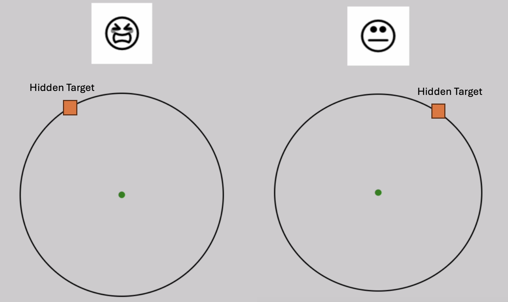
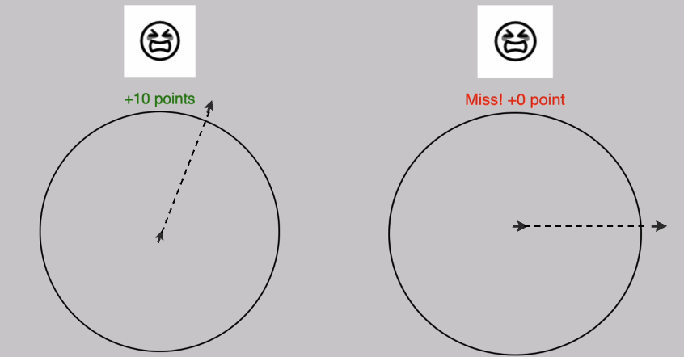

In this study, you will see an image and a circle appear on the screen for each trial.
Each image corresponds to a unique hidden target location on the edge of the circle. You will not be informed about these target locations beforehand.

Your job is to simply move your mouse (or your finger on the trackpad) to find these hidden targets.
There are 6 sections in total, and each section will have a new set of images and new locations.
Within each section, the set of images and their corresponding locations will repeat.
Click Next to read next instruction.
Each image corresponds to ONLY ONE DISTINCT location. After you move to a location on the circle, you will get feedback points to help you figure out how far away you are from the correct location.
The possible points range from 0 to 10. The higher points you get, the closer you are to the correct target location.
The GOAL is to get as many points as possible!

At the beginning of each trial, you will first be asked to move your mouse to a green center point until the cursor disappears.
Once the cursor disappears, you should ClICK. The image will immediately appear after the click. Then, start moving!
You only have just over 1 second to repond (1.5 secs) on each trial, so please do your best to respond in time.
In addition, you WON'T see your cursor while reaching Once you see the image and the circle, simply move your finger/mouse to a direction where you think the target might be in..
You don't need to land exactly on the edge of the circle. Reaching further or outside the circle is acceptable.
No need to click at the end of reaching. Feedback will immediately show up after you reach/cross the edge of the circle.
However, if your ending position lies within the circle, the trial is considered as incomplete, and you will get an error message saying "Too Slow! Next trial."

The whole study will take about 30 minutes. When the experiment is done, you will recieve a CSV file and be redirected back to Prolific's webpage where you will be given a completion code.